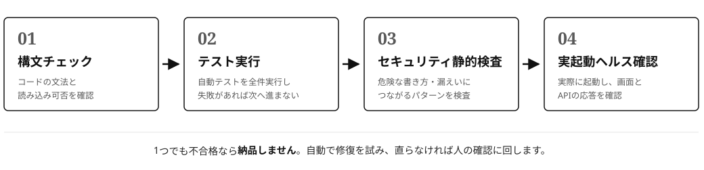
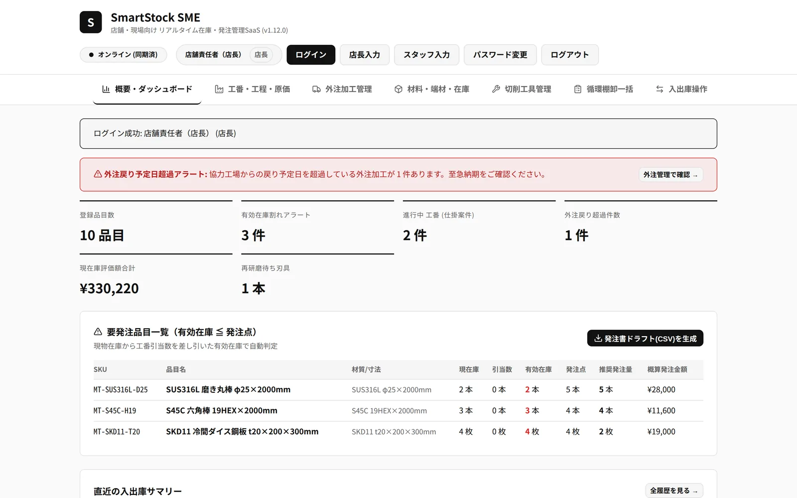

専用アプリの受託開発
既製品では合わない工程管理や記録の仕組みを、その会社の手順に合わせて作ります。含まれる作業は次のとおりです。
- 現場の手順と困りごとのヒアリング
- 設計・開発（動作テスト、セキュリティチェックを含む）
- 納品時の導入・初期設定と、使い方の説明
- 納品後の不具合対応と機能追加の相談
KAINORIAは大阪を拠点とするソフトウェア事業です。中小製造業向けの在庫管理アプリ「SmartStock SME」の提供と、工場ごとの業務手順に合わせた専用アプリの受託開発を行っています。
小さな工場の在庫管理は、大規模工場向けに作られた高額なシステムか、汎用の表計算ソフトのどちらかで回されていることがほとんどです。前者は金額が見合わず、後者は「どの工番に使う予定の在庫か」「いつ足りなくなるか」が追えません。機能が多すぎて定着しない、逆に自社の手順に合わない——現場ではこうした理由で、結局は紙と記憶に頼る管理が続いています。
KAINORIAは、開発工程にAIを活用して作るコストを抑え、小規模な現場でも導入を検討できる専用ソフトウェアを作るために始めた事業です。まず在庫管理を製品として用意し、製品では合わない部分は受託開発で個別に対応します。現在は製品の検証と改善を進めながら、導入の相談を受け付けています。
既製品では合わない工程管理や記録の仕組みを、その会社の手順に合わせて作ります。含まれる作業は次のとおりです。
部品・材料の在庫を工番と結びつけて管理するアプリです。在庫数だけでなく、工番・工程・外注・図面・原価までを1か所で扱います。事業所内のPCに導入し、店内ネットワークのPCやスマートフォンから使います。
メールで相談を受け付けます。現在の管理方法と、困っている点を教えてください。
作る範囲と金額、期間の目安を先に提示します。内容が合わなければ、この時点で終了しても問題ありません。
AIを活用して開発を進めます。納品前には、次の「品質と開発の考え方」にある4段階の品質確認をすべて通過させます。（受託開発の場合）
導入と初期設定を行い、現場で使う方向けに使い方を説明します。
不具合の対応と、使い始めてから出てきた要望への機能追加を相談できます。
受託開発の納品物は、機械的な品質確認を4段階すべて通過したものだけに限っています。1つでも落ちれば、そのまま納品することはありません。
コードが文法的に正しく、読み込める形になっているかを機械的に確認します。
用意した自動テストを全件実行します。1件でも失敗があれば、次へは進みません。
危険な書き方や、情報漏えいにつながるパターンが混入していないかを静的に検査します。
実際に起動して、画面とAPIが応答することを確認します。「動くはず」ではなく「動いたことを確認できた」ものだけを納品します。

確認に落ちた場合は、まず自動で修復を試みます。それでも直らないものは無理に進めず、人の確認に回します。製品の「SmartStock SME」についても同じ考え方で、変更のたびに自動テスト（350件以上）を全件実行し、実機での動作確認を行っています。また、SmartStock SME は事業所内のPCで完結する設計のため、業務データが外部のサーバーへ送信されることはありません。
提供中の製品とサービスです。今後、順次拡充していきます。
中小製造業向けの在庫管理アプリ。在庫・有効在庫の管理、発注アラート、工番と工程の進捗、外注の持出・戻り、図面のリビジョン、工番別の原価集計に対応します。

Excelや紙で回している業務について、アプリ化できる点を診断する「業務診断メモ」と、貴社向けの画面イメージを無料でお送りします。申し込みは3分ほど、返送は3営業日以内です。診断のあとに契約を前提とする必要はありません。
貴社の「いま何がどれだけあり、いつ出せるか」という情報は、本来最大の営業材料になります。本プログラムは、ご利用中のアプリに入力された在庫や入出庫の情報を、発注先を探している企業へ届ける仕組みです。現在、発注先探しにAIを活用する企業が増えています。AIが発注先の候補として見つけられるのは「最新情報が公開されている企業」のみです。本プログラムに参加することで、貴社もその候補として選ばれるようになるメリットがあります。AI活用の流れは今後さらに加速するため、早期に参加することがより多くの機会につながります。営業に行かなくても新しい注文につながる可能性があります（注文や利益をお約束するものではありません）。参加しなくても、アプリの機能はすべてそのまま使えます。提供のしかたは、データの項目ごとに3段階（Tier）から選べます。
会社名や取引先が分からない集計だけを提供します。「業界の今の動き」としてのみ使われます。
会社名は伏せたまま、地域（市区町村まで）・数量の幅・納期などを提示し、発注先の候補として見つけてもらえます。同じ属性の会社が3社未満の場合は提示しません。
お問い合わせがあったときに、会社名・所在地（市区町村まで）・該当項目を、当社のAPIを通じて開示します。一度開示した情報は取り消すことはできません。開示を止めたい場合は、Tierの変更や参加の停止で即停止します。
対価として、初年度（参加から12か月間）は月額利用料の割引が適用されます。割引率は項目ごとのTierの選択で決まります（Tier1＝1点、Tier2＝1.5点、Tier3＝2点として、5% × 合計点 ÷（2点 × 全項目数）、0.25%刻み）。すべてTier1で2.5%、すべてTier2で3.75%、すべてTier3で5%です。Tierはいつでも変更でき、新しい割引率は翌月のご請求から適用されます。詳しい条件は、導入時にご案内する「データ提供プログラム利用特約」に定めます。
SmartStock SMEは事業所内のPCに導入して動かすため、インターネット接続は必須ではありません。同じネットワーク内のPCやスマートフォンのブラウザから利用でき、データが外部のサーバーへ送られることはありません。
製品には、原価集計や発注書ドラフトなどをCSV形式で出力する機能があります。導入時のデータ移行については、現在の表の形式を確認したうえで、対応できる範囲を相談時に決めます。
大阪を拠点としています。打ち合わせはオンラインでも対応できます。
下記のお問い合わせ先メールアドレスへ、現在の管理方法と困っている点を書いて送ってください。
製品の導入、受託開発のご相談はメールで受け付けています。